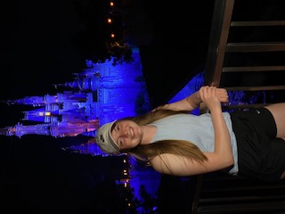
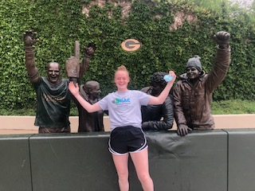
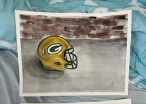
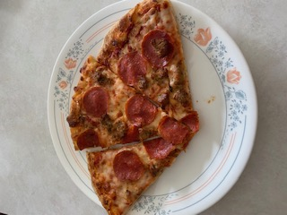
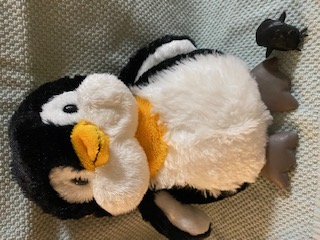
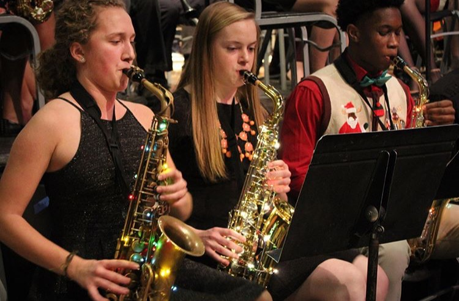

Dacoda values the connections she has made with people
throughout her life
The people in her life have helped shape her
into the person she is today
Dacoda enjoys going on long road trips with her family.
Disney World in Florida is her favorite vacation spot so far. Someday, she wishes to go to Paris and New Orleans.

Florida Vacation
Dacoda is a big Green Bay Packers fan! Someday she would like to make it to a
Packers game at Lambeau Field.

Go Green Bay Packers!

Green Bay Packers Fan
Dacoda's favorite food is pizza.
She enjoys the varieties restaurants have to offer,
although Punch Pizza is a favorite.

Pizza
Penguins are Dacoda's favorite animal, mostly because they are so cute!

Penguins
Dacoda has fond memories of the winter band
concert her senior year of high school.

Band Concert
Dacoda values the connections she has made with
people throughout her life
(through sports, school, and her personal endeavors)
She finds that they have helped shape her into the
person she is today